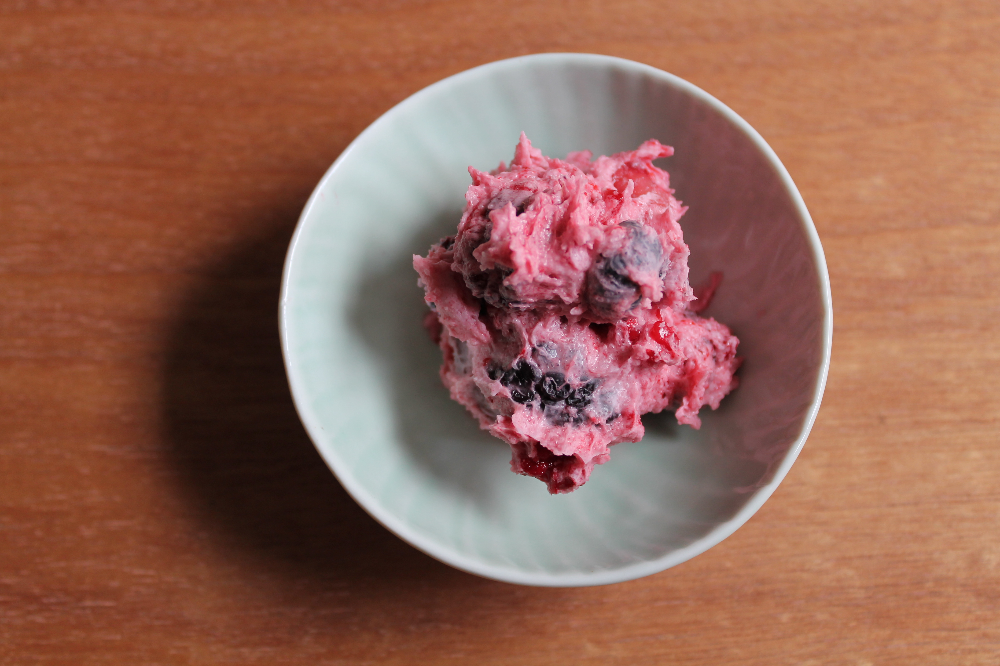

Akutaq

Description:
The native people (Indigenous People) of Alaska have a distinct version of ice cream called Akutaq (also known as Eskimo Ice Cream). It is not creamy ice cream as we know it, but a concoction made from reindeer fat or tallow, seal oil, freshly fallen snow or water, fresh berries, and sometimes ground fish. Air is whipped in by hand so that it slowly cools into foam. They call this Arctic treat akutaq (ah-goo-duck), aqutuk, ackutuk, or Eskimo ice cream. Akutaq is a Yupik word that means mix them together.
This is a delicacy that Alaska Natives have thrived on for thousands of years. This recipe was made by Natives a long, long time ago for survival and was used as a special traveling food. When hunters went out to go hunting, they brought along akutaq.
Ingredients:
- 1 cup reindeer, caribou, or moose fat (back fat)*
- 1 cup animal oil (seal, walrus, or whale), divided
- 1/2 cup water or 2 cups loose snow
- 4 1/2 cups berries (blueberries, cloudberries, cranberries, salmonberries, or blackberries), fresh
Instructions:
- Grate or grind fat into small pieces.
- In a large pot over low heat, add fat and stir until it becomes a liquid (the fat should never get hotter than it is comfortable to your hand).
- Add 1/3 cup seal oil, mixing until it is all liquid.
- Remove from heat and continue stirring the fat in big circles.
- While continuing to stir at a steady rate, add 1/4 cup water or 1 cup snow and another 1/3 cup seal oil.
- As fat slowly cools and starts to get fluffy and white, add remaining 1/4 cup water or 1 cup snow and remaining 1/3 cup seal oil, continuing to stir.
- When the Akutaq is as white and fluffy as you can make it, fold in berries.
- Form into desired shape. Cover and freeze to firm up.